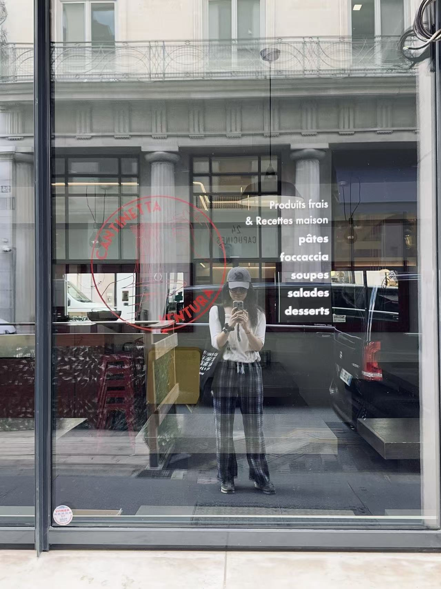

About me
I've lived in Beijing, Shanghai, SF Bay Area, LA, Paris, and Zurich. Somewhere along the way, crossing borders stopped being travel and became the job: I move ideas, capital, and people between ecosystems that don't naturally talk to each other.
The resume version: Sequoia Capital China, then Airwallex during its scale-up years, then co-founding an XR hardware startup, which I exited in early 2026. The XR years left me with a lasting obsession with frontier hardware and a network across the European deep tech — France, Switzerland, and the labs in between that I still scout for.
Now I'm doing an MBA at Tsinghua while building something new and quiet in AI for Fintech. More on that when it's time. On the side I run Bay to Bay, a founder community connecting San Francisco, Greater China, and Europe, and EuReality, this domain's namesake, a media project for frontier founders that's sleeping while I build.
Off the clock: yoga, long bike rides, and an ongoing engineering project to make decaf coffee taste like it has a reason to exist. One day, a French-style cafe in SF where founders can sit for 8 hours and nobody minds.
Languages
CHINESE — NATIVE
ENGLISH — FLUENT (LIVED US 6+ YEARS)
FRENCH — SURVIVAL LEVEL, CAFE-TESTED (PARIS)
Latest